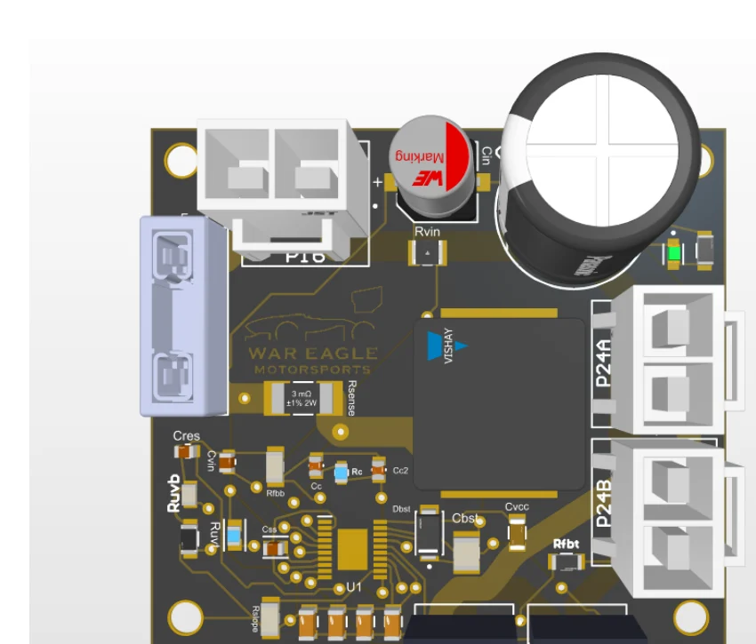
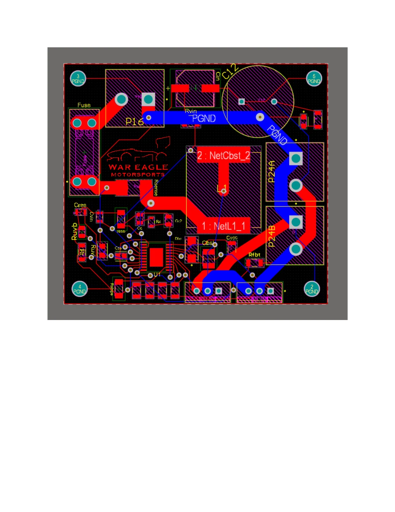

War Eagle Motorsports · Power electronics
Formula SAE Boost Converter
Designed a synchronous boost converter to supply 24 V to the vehicle’s pumps and control electronics.
- Input range
- 11–16 V
- Output target
- 24 V at 7 A
- Controller
- LM5122-Q1
- Status
- Released for fabrication


What I designed
- Selected components and designed the feedback and protection networks in Altium Designer.
- Routed the high-current PCB, including the switching node, ground connections and power connectors.
- Checked component sizing against datasheets and evaluated converter operation in LTspice before releasing the layout for fabrication.